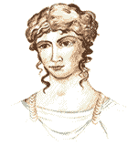
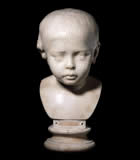
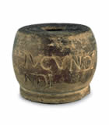
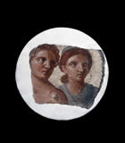

The Vindolanda Tablets
Sulpicia Lepidina was really pleased to receive the birthday invitation from her friend Claudia Severa.
She was looking forward to the thought of seeing her friend as she sometimes felt rather lonely at the fort, which was on the northern frontier of the Roman province of Britain and therefore in quite a remote location.
It would be nice to see Severa's young son again: it had been a while since she had last spent time with Severa's family.
She reread the invitation now: whilst most of it had been written by a scribe she noted that Severa had added some lines of her own. Her handwriting was not quite as elegant as the scribe's but Lepidina knew that Severa was very proud of her ability to write.
Lepidina laid the wooden tablet on the table beside her. She must speak to her husband before replying to her friend's invitation, but the thought of the party had already brightened her day.
